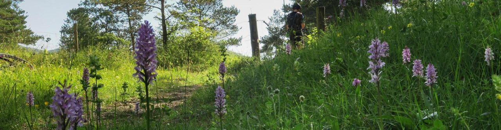

Ruta · Sant Joan
Ruta circular fàcil que tant podeu fer a peu com en bicicleta, amb trams de pujada tècnics. Comença al pont del Reixac, a tocar del restaurant dels Pagesos , o bé podeu sortir directament de la…